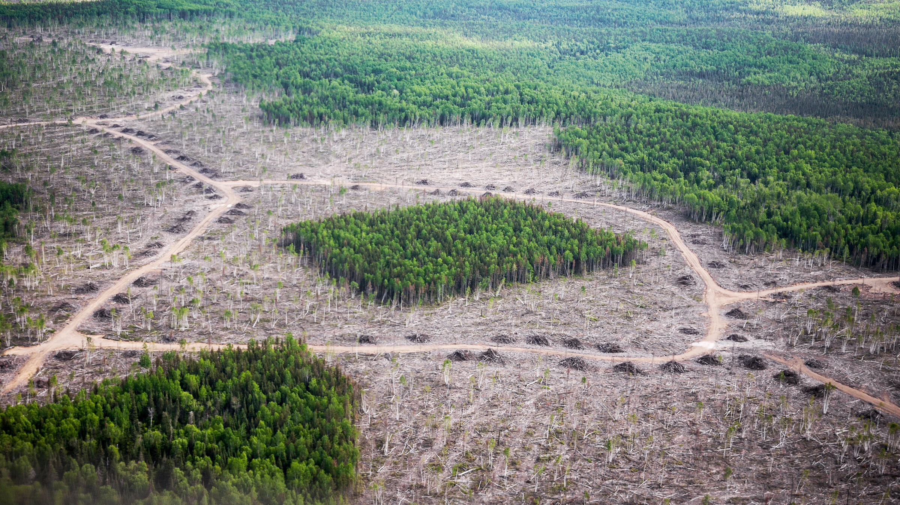

Leopards
Three Locations Leopards Are Found In Sri Lanka

Yala National Park
Yala National Park is one of the most popular and well-known wildlife reserves in Sri Lanka, and it is renowned for its high leopard population. The park is located in the southeastern part of the country and offers excellent opportunities for leopard sightings
Wilpattu National Park
Wilpattu, located in the northwest of Sri Lanka, is the largest national park in the country. It is known for its diverse ecosystems and is home to a significant leopard population. The park's landscape includes dense jungles, lakes, and natural trails, providing a suitable habitat for leopards
Udawalawe National Park
While Udawalawe is more famous for its elephant population, it also houses leopards. The park is situated in the southern part of Sri Lanka and is primarily known for its large population of elephants. However, the diverse habitat within the park supports a variety of wildlife, including leopards
Threats To Leopards
1.Habitat Loss and Fragmentation
Deforestation: The destruction of forests for agriculture, urbanization, and other developmental activities leads to a loss of suitable leopard habitats. As the human population expands and demands for land increase, leopards find their living spaces shrinking, which can result in increased human-leopard conflicts
Fragmentation: Even within remaining forested areas, fragmentation occurs when habitat is divided into smaller, isolated patches. This makes it challenging for leopards to find prey, mates, and maintain genetic diversity. It also increases the likelihood of human-wildlife conflict as leopards may venture into human-dominated landscapes in search of resources
2.Human-Wildlife Conflict
Prey Depletion and Livestock Predation: As human populations grow and encroach upon leopard habitats, there is often a decline in natural prey species due to hunting, habitat destruction, or competition with domestic livestock. In the absence of sufficient wild prey, leopards may turn to livestock for food, leading to conflicts with local communities. Retaliatory killings by farmers seeking to protect their livestock pose a significant threat to leopard populations
Road Accidents and Poaching: Increased human activities, including the expansion of road networks through leopard habitats, raise the risk of road accidents involving leopards. Poaching for their body parts, skins, or retaliation for perceived threats also poses a direct threat to leopard populations